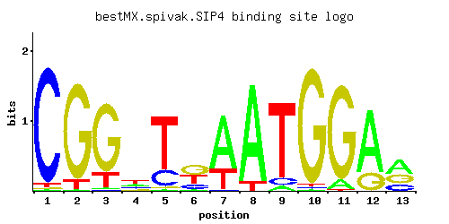

SIP4
YJL089W
C6 zinc cluster transcriptional activator that binds to the carbon source-responsive element (CSRE) of gluconeogenic genes; involved in the positive regulation of gluconeogenesis; regulated by Snf1p protein kinase; localized to the nucleus
Best-performing DNA-binding model.

View and copy the recommended matrices ↘
A | 0.005 0.005 0.011 0.263 0.007 0.032 0.717 0.904 0.057 0.008 0.088 0.767 0.475 C | 0.960 0.003 0.006 0.231 0.231 0.193 0.013 0.004 0.087 0.013 0.003 0.005 0.206 G | 0.005 0.905 0.812 0.120 0.023 0.423 0.003 0.003 0.003 0.962 0.904 0.223 0.306 T | 0.030 0.087 0.171 0.386 0.739 0.352 0.267 0.089 0.853 0.017 0.005 0.005 0.014
A | 0 0 1 26 0 3 71 90 5 0 8 76 47 C | 96 0 0 23 23 19 1 0 8 1 0 0 20 G | 0 90 81 12 2 42 0 0 0 96 90 22 30 T | 3 8 17 38 73 35 26 8 85 1 0 0 1
A | -4.16 -4.16 -3.37 -0.20 -3.82 -2.30 0.81 1.04 -1.73 -3.69 -1.29 0.87 0.39 C | 1.67 -4.09 -3.40 0.25 0.25 0.07 -2.63 -3.81 -0.73 -2.63 -4.09 -3.58 0.13 G | -3.58 1.61 1.51 -0.41 -2.06 0.85 -4.09 -4.09 -4.09 1.68 1.61 0.21 0.53 T | -2.37 -1.30 -0.63 0.19 0.84 0.10 -0.18 -1.28 0.98 -2.94 -4.16 -4.16 -3.13
Alternative candidate matrices 9
Historical matrix candidates from the original ScerTF database. Expand a source to inspect its original logo, scores, and matrix values.
SIP4Badis et. al.P = 0.03541View matrix ↘
SIP4_AFoat et. al.P = 1View matrix ↘
SIP4_BFoat et. al.P = 1View matrix ↘
SIP4Harbison et. al.P = 1.84e-15View matrix ↘
SIP4Macisaac et. alP = 4.22e-17View matrix ↘
SIP4Morozov et. al.P = 7.95e-14View matrix ↘
SIP4Pachkov et alP = 3.79e-11View matrix ↘
SIP4Zhu et. al.P = 0.0768View matrix ↘
SIP4Zhao and StormoP = 1View matrix ↘
Gene-level annotations and interactions.
Genes bound in ChIP-chip experiments 84 genes
YAL009W, YAL010C, YAL021C, YBR061C, YCR018C-A, YCR019W, YCR083W, YDL091C, YDL176W, YDL177C, YDR016C, YDR086C, YDR098C-A, YDR098C-B, YDR131C, YDR184C, YDR257C, YDR282C, YDR317W, YDR326C, YDR327W, YDR369C, YDR370C, YDR371W, YDR372C, YDR373W, YDR454C, YDR456W, YDR522C, YDR523C, YEL030W, YEL048C, YER023W, YFR002W, YGL001C, YGL002W, YGL003C, YGL185C, YGL192W, YGL194C, YGL230C, YGR071C, YGR072W, YGR089W, YGR104C, YGR105W, YGR188C, YHL042W, YHR155W, YIL110W, YJL111W, YJR098C, YJR099W, YJR108W, YKL077W, YKR031C, YKR032W, YKR034W, YKR061W, YLR127C, YLR128W, YML002W, YMR176W, YMR211W, YMR258C, YNL081C, YNL102W, YNL129W, YNL130C, YNL260C, YNR039C, YNR040W, YNR048W, YOL023W, YOL072W, YOL073C, YOL079W, YOL160W, YOR093C, YOR094W, YOR148C, YOR266W, YPL122C, YPL260W
Genes affected by TF deletion 34 genes
YKR071C, YHR146W, YGR151C, YHR179W, YPL016W, YLR368W, YMR314W, YBR129C, YBL058W, YER029C, YOR229W, YAR015W, YOR043W, YJR094C, YMR023C, YNR066C, YLR099C, YJR157W, YNL157W, YBR265W, YMR294W-A, YPL122C, YBR135W, YGR012W, YIR010W, YOR324C, YNL065W, YMR178W, YNL289W, YDR019C, YAL062W, YNL299W, YBR244W, YNL264C
Genes supported by both experiments 1 genes
YPL122C